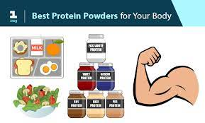
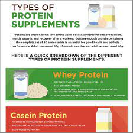
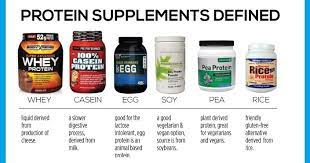

Serial No. |
Image |
Facts |
1 |
 |
There are three common forms:
Protein concentrates:
Produced by extracting protein from whole food using heat and acid or enzymes.
These typically supply 60–80% protein, with the remaining 20–40% composed of
fat and carbs.
Protein isolates: An
additional filtering process removes more fat and carbs, further concentrating
the protein. Protein isolate powders contain about 90–95% protein.
Protein hydrolysates:
Produced by further heating with acid or enzymes — which breaks the bonds
between amino acids — hydrolysates are absorbed more quickly by your body and
muscles.
|
2 |
 |
Whey Protein
Whey protein comes from milk. It is the liquid that separates from the curds during the cheesemaking process. It’s high in protein but also harbors lactose, a milk sugar that many people have difficulty digesting.
While whey protein concentrate retains some lactose, the isolate version contains very little because most of this milk sugar is lost during processing.
Whey digests quickly and is rich in branched-chain amino acids (BCAAs). Leucine, one of these BCAAs, plays a major role in promoting muscle growth and recovery after resistance and endurance exercise |
3 |
 |
Casein Protein
Like whey, casein is a protein found in milk. However, casein is digested and absorbed much more slowly.
Casein forms a gel when it interacts with stomach acid, slowing down stomach emptying and delaying your bloodstream’s absorption of amino acids.
This results in a gradual, steadier exposure of your muscles to amino acids, reducing the rate of muscle protein breakdown |
4 |
 |
Egg Protein
Eggs are an excellent source of high-quality protein.
Of all whole foods, eggs have the highest protein digestibility-corrected amino acid score (PDCAAS).
This score is a measure of a protein’s quality and digestibility (28Trusted Source).
Eggs are also one of the best foods for decreasing appetite and helping you stay full for longer (29Trusted Source, 30Trusted Source). |